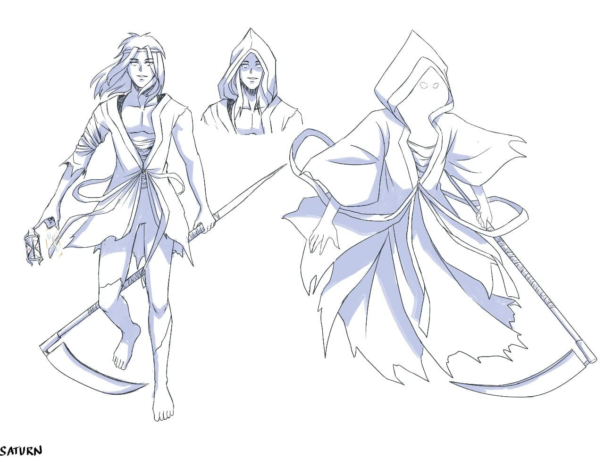

Anime-Style Key Illustration:
High-quality traditional and digital Japanese-style illustration and in-betweening.

Concept Art & Character Design:
Creation of model sheets, turnarounds, expressions, and environmental concepts for pre-production.

Western-Style Key Illustration
High-quality traditional and digital illustration tailored for North American or European broadcast standards.
Storyboarding & Animatics:
Complete character movement and scene animation. Translating scripts into visual panels and timed video sketches to establish pacing before full production begins.

Trainings and Workshop
Local structured courses and masterclasses designed to train upcoming digital artists in professional studio pipelines.